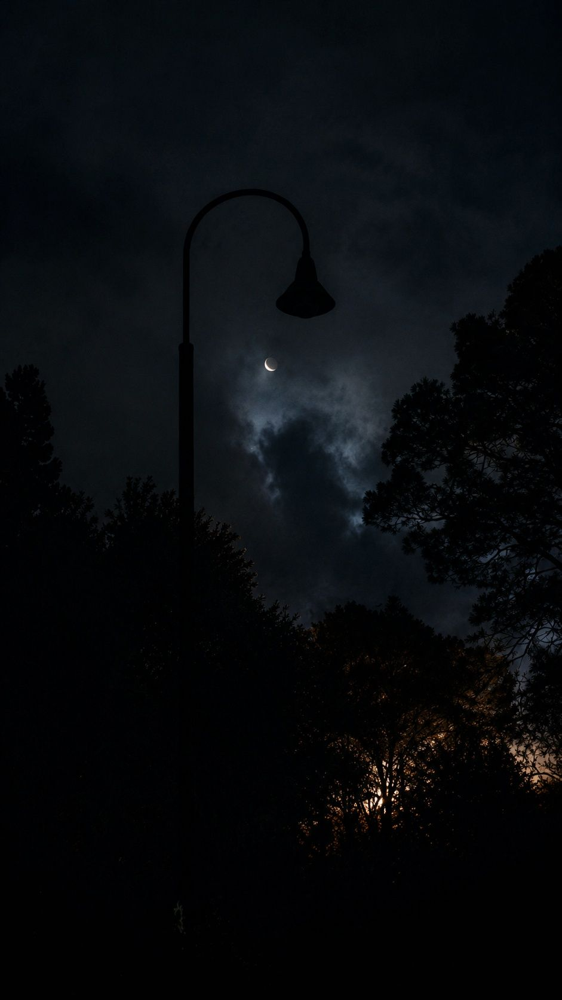
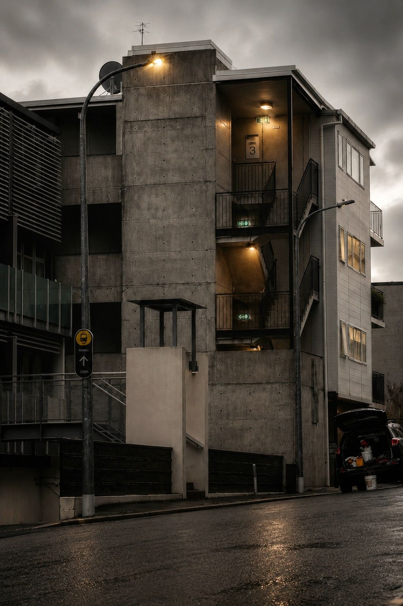
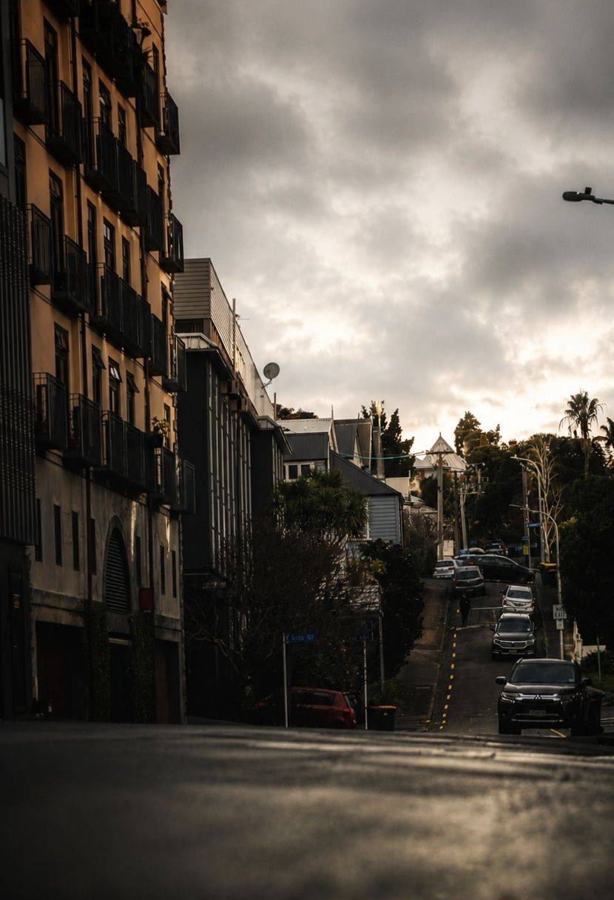
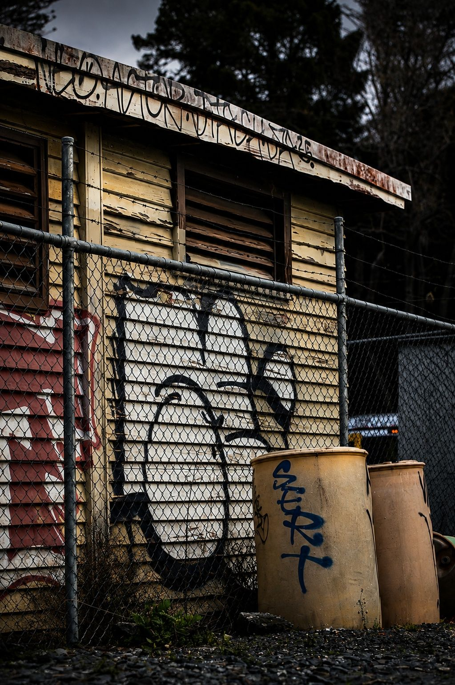
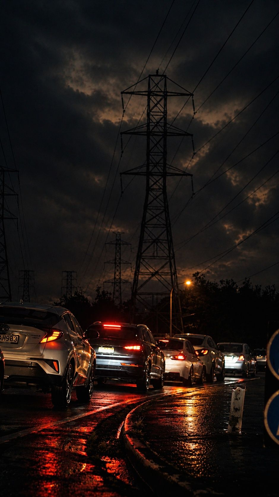
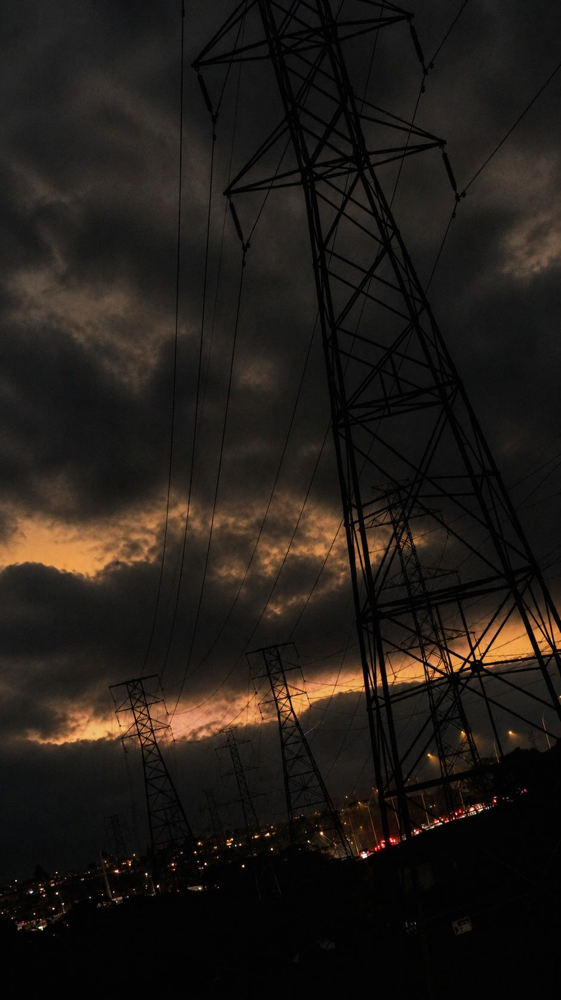

I've always been more interested in what comes before the work than the work itself.
For years I worked in the film and television industry as a camera assistant, watching directors, cinematographers and entire crews shape a story one decision at a time. Every shot, every movement and every cut existed for a reason. Nothing was accidental.
When studying branding and user experience design, I realised businesses work much the same way. Every interaction tells people something. A website, a product, a service, even silence, all leave someone with an impression. Whether intentional or not, every project is already telling a story.
That observation became the thread connecting everything I'd done.
What fascinated me wasn't design itself. It was the questions that came before it.
I've found that the answers to those questions are often far more powerful than any logo, website or marketing campaign. They reveal the meaning behind the work. They expose assumptions. They make invisible priorities visible. Most importantly, they give people something worth committing to.
Because people rarely struggle simply because they don't know what to do. More often, they struggle because they haven't connected what they're building to something meaningful enough to carry them through the difficult parts.
Without that, every obstacle feels like a reason to stop. With it, the work has direction.
That understanding came from trying to solve the same problem for myself.
The hardest project I ever worked on was my own. I realised that understanding a problem and acting on it aren't the same thing. Knowing what to do isn't always enough.
Like many creative people, I never lacked ideas. I lacked a reliable way to separate the ones worth pursuing from the noise. I lacked a reliable way to hold onto them long enough to understand which ones mattered.
Over time I developed a practice of slowing down, asking better questions, separating signal from noise, and turning complexity into decisions. That way of thinking gradually evolved into Target Practice.
I'm building An Ideas Merchant to share that process with founders, creatives and organisations. Not to tell them who they should be, but to help uncover what already exists beneath the noise, articulate why it matters, and build enough conviction that execution becomes the natural next step.
Because when the future you're trying to create becomes clear enough, the cost of never building it becomes impossible to ignore.
Selected Frames
The way I see.
Street work · Auckland






Clarity before creation.
Direction before delivery.
Meaning before momentum.